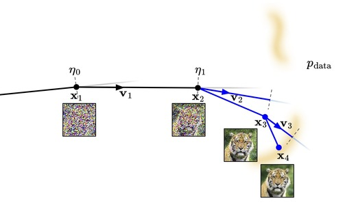

Diffusion-based generative models have achieved remarkable performance across various domains, yet their practical deployment is often limited by high sampling costs. While prior work focuses on training objectives or individual solvers, the holistic design of sampling, specifically solver selection and scheduling, remains dominated by static heuristics. In this work, we revisit this challenge through a geometric lens, proposing SDM, a principled framework that aligns the numerical solver with the intrinsic properties of the diffusion trajectory. By analyzing the ODE dynamics, we show that efficient low-order solvers suffice in early high-noise stages while higher-order solvers can be progressively deployed to handle the increasing non-linearity of later stages. Furthermore, we formalize the scheduling by introducing a Wasserstein-bounded optimization framework. This method systematically derives adaptive timesteps that explicitly bound the local discretization error, ensuring the sampling process remains faithful to the underlying continuous dynamics. Without requiring additional training or architectural modifications, SDM achieves state-of-the-art performance across standard benchmarks, including an FID of 1.93 on CIFAR-10, 2.41 on FFHQ, and 1.98 on AFHQv2, with a reduced number of function evaluations compared to existing samplers.
For a complete list of publications, please visit Google Scholar.